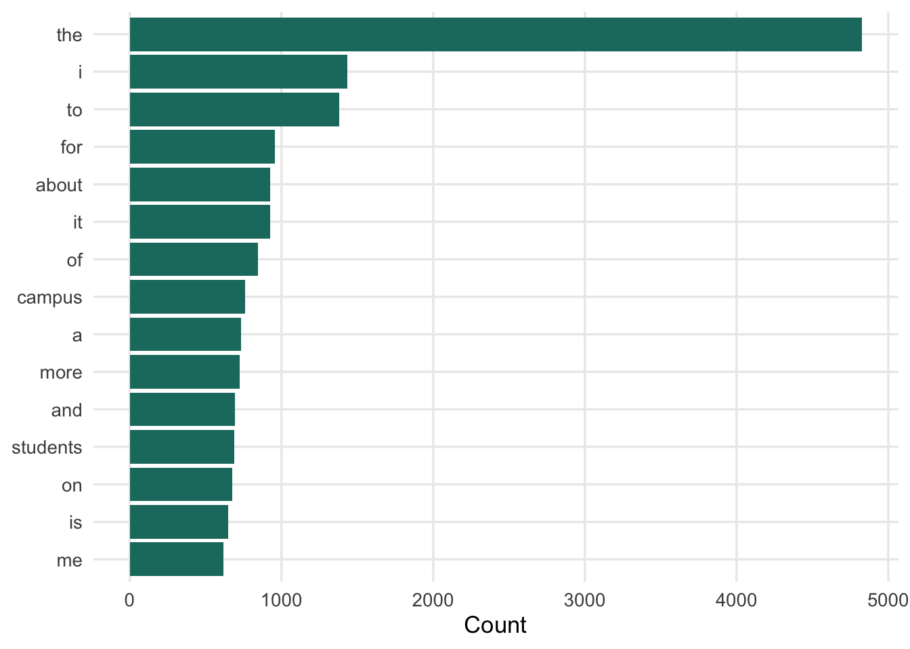
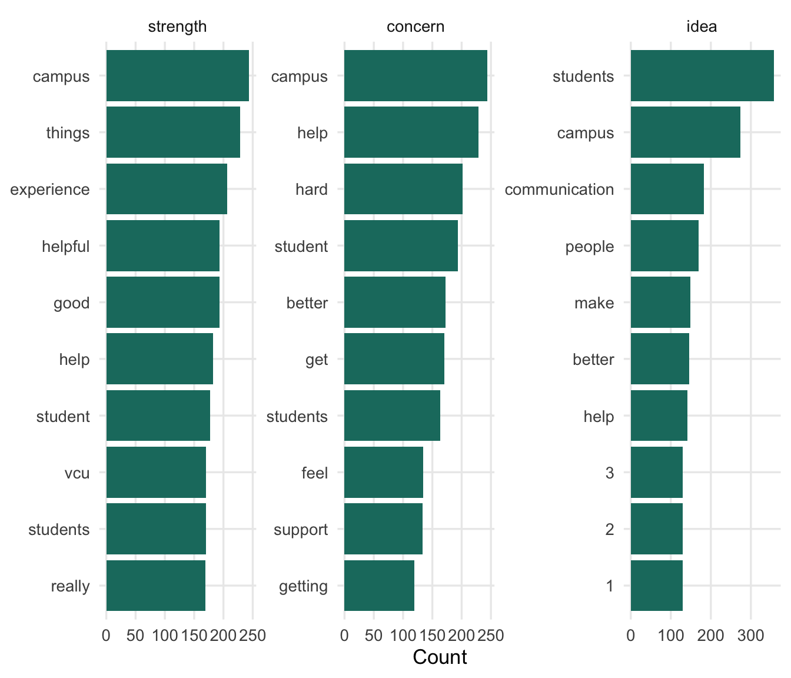
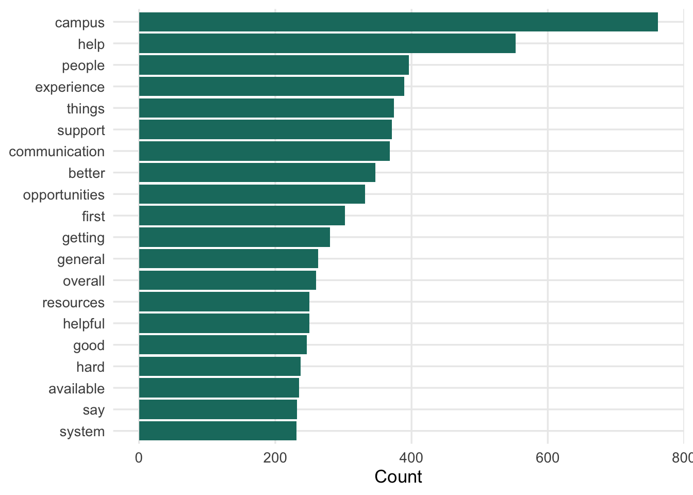
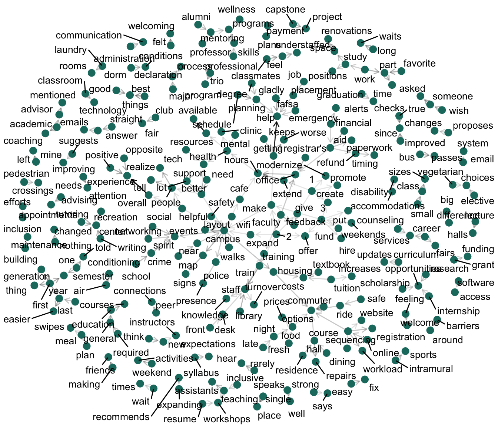

2 Tokens
Data for this chapter: data/vcu_cares_long.csv
Computers cannot read a sentence the way you do. Nearly every text-mining method starts by breaking text into pieces and counting them. This chapter covers that first step and the simplest description it allows: which words come up most.
By the end you will know how to split text into tokens, remove words that carry no meaning, count what is left, and look at pairs of words instead of single words.
The first line loads our shared helpers (the tidyverse packages, the chart style, and load_vcu()). library(tidytext) adds the package this chapter is about, which provides the text-specific tools. The last line loads the cleaned data, as in Chapter 1.
2.1 The tidy text idea
The tidytext package follows one rule: one token per row. A token is whatever unit of text you decide to count. Most often it is a single word, but it can be a pair of words, a sentence, or even a single letter. Splitting text into tokens is called tokenizing.
Why one token per row? Because once text is in that shape, every tool you already use on tables (counting, filtering, charting) works on words too.
tokens <- vcu |>
unnest_tokens(word, text)
tokens |> select(doc_id, question, word) |> head(10)# A tibble: 10 × 3
doc_id question word
<dbl> <fct> <chr>
1 1 strength really
2 1 strength happy
3 1 strength with
4 1 strength the
5 1 strength classroom
6 1 strength technology
7 1 strength that
8 1 strength would
9 1 strength help
10 1 strength a [1] 3448[1] 58976unnest_tokens(word, text) is the workhorse of this chapter. It takes two main arguments:
- the name of the new column to create (
word), and - the column that holds the text (
text).
For each answer, it splits the text into words and makes one row per word, copying every other column (the answer’s ID, question, level, and so on) onto each new row. Look at the first rows of the output: all ten words come from the same answer (doc_id 1), and they appear in order.
The 3,448 answers became about 58,976 rows, one per word. Notice that unnest_tokens() also lowercased everything and stripped punctuation. Those are defaults, and they are cleaning decisions made for you: “VCU” and “vcu” now count as the same word, which is usually what we want.
unnest_tokens()
You can change what a token is, or how the text is prepared, by adding named options.
| Option | Meaning | Example |
|---|---|---|
token = "words" |
Split into single words (the default) | |
token = "ngrams", n = 2 |
Split into overlapping pairs of words (“bigrams”) | We use this later in the chapter |
token = "sentences" |
Split into sentences | unnest_tokens(sentence, text, token = "sentences") |
token = "characters" |
Split into single letters | Rarely useful for our purposes |
to_lower = FALSE |
Keep capital letters as they are | Useful if capitalization carries meaning |
strip_punct = FALSE |
Keep punctuation marks as separate tokens | Useful for studying style |
2.2 Counting words
tokens |>
count(word, sort = TRUE) |>
slice_head(n = 15) |>
ggplot(aes(n, reorder(word, n))) +
geom_col() +
labs(x = "Count", y = NULL)
Reading the block as a series of steps:
-
count(word, sort = TRUE)counts how many times each distinct word appears, with the most frequent first. The result has a columnwordand a columnn(the count). -
slice_head(n = 15)keeps just the first fifteen rows, which are the fifteen most frequent words. -
ggplot(aes(n, reorder(word, n)))starts a chart. The countngoes on the horizontal axis. The words go on the vertical axis, andreorder(word, n)sorts them by their count, so the longest bar ends up on top instead of the words being in alphabetical order. -
geom_col()draws a bar for each row, with the bar’s length given by the value on the horizontal axis. (geom_col()draws bars from values you already have; its cousingeom_bar()counts rows for you.) -
labs(x = "Count", y = NULL)labels the horizontal axis and removes the vertical axis label, since the words speak for themselves.
This is the classic first result in text mining, and it is nearly useless. The most frequent words are function words like “the,” “i,” “to,” and “for”: words that appear in all English and say nothing about VCU.
2.3 Stop words
Stop words are very common function words (“the,” “and,” “of,” “to”) that we remove before counting, because they appear everywhere and carry little meaning. tidytext includes several ready-made lists in a table called stop_words.
count(stop_words, lexicon)# A tibble: 3 × 2
lexicon n
<chr> <int>
1 SMART 571
2 onix 404
3 snowball 174Each list (or lexicon) comes from a different source and has a different length. The longest, SMART, has 571 words; the shortest, snowball, has 174.
We will use the snowball list, which is short and conservative. The longer SMART list removes more but also removes words like “new,” “first,” “need,” and “help” that can be meaningful here. There is no correct list; the point is to choose one on purpose and to say which.
stops <- stop_words |> filter(lexicon == "snowball")
n_before <- nrow(tokens) # all tokens, from the chunk above
tokens <- vcu |>
unnest_tokens(word, text) |>
anti_join(stops, by = "word")
nrow(tokens)[1] 33923-
stop_words |> filter(lexicon == "snowball")keeps only the snowball rows of the stop-word table and saves them asstops. -
n_before <- nrow(tokens)records how many tokens we had before removing anything, so that we can report how many disappeared. -
anti_join(stops, by = "word")does the removing. A join combines two tables by matching rows on a shared column. Ananti_joinis the opposite of the usual kind: it keeps only the rows of the first table that do not have a match in the second. Here that means “keep every token whosewordis not in the stop-word list.” The optionby = "word"names the column to match on.
About 42% of the tokens disappeared. Now the counts, overall and by question:
top_by_q <- tokens |>
count(question, word, sort = TRUE) |>
group_by(question) |>
slice_max(n, n = 10, with_ties = FALSE) |>
ungroup()
ggplot(top_by_q, aes(n, reorder_within(word, n, question))) +
geom_col() +
scale_y_reordered() +
facet_wrap(~question, scales = "free") +
labs(x = "Count", y = NULL)
The first part builds a small table, top_by_q.
-
count(question, word, sort = TRUE)counts each word within each question, so “campus” appears once for strengths, once for concerns, and once for ideas, each with its own count. -
group_by(question)tells R to handle each question separately for the next step. -
slice_max(n, n = 10, with_ties = FALSE)keeps the ten rows with the largestnwithin each question. The firstnis the column to rank by; the secondn = 10is how many to keep.with_ties = FALSEmeans “give me exactly ten, even if several words tie for tenth place.” -
ungroup()turns the grouping off.
The second part draws it. facet_wrap(~question) splits one chart into a row of small ones, one per question (this is called faceting), and scales = "free" lets each small chart have its own axis ranges. reorder_within() and scale_y_reordered() work as a pair: they sort the words inside each panel separately. Without them, one shared sort would order every panel and the result would be jumbled.
2.4 Domain stop words
Look at the plot. Words like “vcu,” “students,” and “student” appear near the top of everything, because every answer is about students at VCU. They are not stop words in English, but in this dataset they carry no information. Add them yourself:
-
tibble(word = c(...))builds a one-column table of our own extra stop words. It has the same shape as the built-in list (a column namedword), soanti_join()works on it the same way. -
filter(!str_detect(word, "^\\d+$"))removes tokens that are only digits. Read it from the inside out: the pattern^\\d+$means “the whole token is one or more digits”;str_detect()asks whether each word matches it; and the!in front means not, so we keep only the words that do not match.
Many students answered the “top three things” question as a numbered list, so “1,” “2,” and “3” would otherwise rank among the most common words in the whole dataset.
Print the top 50 words, read down the list, and ask of each: would I want this word to count as evidence of anything? Add the ones where the answer is no. Then re-check. You will do this loop two or three times on any new dataset, and the final list should be written down so it can be defended.
tokens |>
count(word, sort = TRUE) |>
slice_head(n = 20) |>
ggplot(aes(n, reorder(word, n))) +
geom_col() +
labs(x = "Count", y = NULL)
This is the same chart as before, now with a longer list (twenty words) and with the stop words removed. We have a picture of what students talk about: words like “campus,” “help,” “helpful,” “better,” “communication,” and “support” lead the list. In a real dataset, concrete topics (“housing,” “financial,” “events”) would be more prominent. Here, generic words rise because the synthetic text is assembled from sentence templates, a reminder that frequent words partly reflect how people phrase things, not just what they talk about.
This is a legitimate first result. Its limit is that a raw count rewards words that are frequent in the biggest group or in the longest answers. We will fix that in Chapter 3.
2.5 Beyond single words: bigrams
A single word often loses its meaning. “Financial” and “aid” are separate tokens, but “financial aid” is one idea. If we ask unnest_tokens() for token = "ngrams" with n = 2, it counts adjacent pairs of words, called bigrams. (An n-gram is a run of n words; a trigram has three.)
bigrams <- vcu |>
unnest_tokens(bigram, text, token = "ngrams", n = 2) |>
filter(!is.na(bigram)) |>
separate(bigram, c("w1", "w2"), sep = " ", remove = FALSE) |>
filter(!w1 %in% stops$word, !w2 %in% stops$word,
!w1 %in% custom_stops$word, !w2 %in% custom_stops$word)
bigrams |> count(bigram, sort = TRUE) |> head(20)# A tibble: 20 × 2
bigram n
<chr> <int>
1 overall experience 259
2 resources available 234
3 getting help 222
4 first generation 103
5 big difference 93
6 single place 91
7 best things 86
8 train staff 79
9 extend hours 76
10 felt welcoming 73
11 positive experience 73
12 gladly help 71
13 someone asked 71
14 first semester 70
15 true since 70
16 favorite part 67
17 first year 66
18 improved since 66
19 year easier 66
20 advisor mentioned 65Step by step:
-
unnest_tokens(bigram, text, token = "ngrams", n = 2)makes one row per pair of neighboring words. The sentence “really helpful advisors” gives two bigrams: “really helpful” and “helpful advisors.” The pairs overlap. -
filter(!is.na(bigram))drops the empty rows that appear for answers with only one word, which have no pair.is.na()asks “is this value missing?” and the!flips it. -
separate(bigram, c("w1", "w2"), sep = " ", remove = FALSE)splits each pair into two new columns,w1andw2, at the space.remove = FALSEkeeps the originalbigramcolumn as well. - The last
filter()removes pairs where either word is a stop word.%in%asks “is this value in that list?”, so!w1 %in% stops$wordmeans “w1 is not one of the stop words.” (stops$wordpicks thewordcolumn out of thestopstable.) We have to check both positions, because a pair like “the library” has a good word and a throwaway word.
We split each bigram into two words so that we can filter stop words from either position. Pairs like “getting help,” “first generation,” and “academic coaching” surface here that are more informative than their separate words.
Read the list for artifacts too. Several of the top pairs come from the templates that built this dataset (“gladly help” and “someone asked” are halves of one stock sentence), and in real text you will see artifacts of a different kind: the abbreviation “e.g.” becomes the pair “e g,” for example. Tokenizing is a blunt instrument, so scan the list for pairs that are not themes.
2.5.1 A network of word pairs
A list of pairs is hard to take in. A network chart shows how the words connect.
Attaching package: 'igraph'The following objects are masked from 'package:lubridate':
%--%, unionThe following objects are masked from 'package:dplyr':
as_data_frame, groups, unionThe following objects are masked from 'package:purrr':
compose, simplifyThe following object is masked from 'package:tidyr':
crossingThe following object is masked from 'package:tibble':
as_data_frameThe following objects are masked from 'package:stats':
decompose, spectrumThe following object is masked from 'package:base':
unionlibrary(ggraph)
edges <- bigrams |>
count(w1, w2, sort = TRUE) |>
filter(n >= 8)
set.seed(664)
graph_from_data_frame(edges) |>
ggraph(layout = "fr") +
geom_edge_link(aes(edge_alpha = n), show.legend = FALSE,
arrow = grid::arrow(length = grid::unit(2, "mm")),
end_cap = circle(2, "mm")) +
geom_node_point(color = vcu_teal, size = 3) +
geom_node_text(aes(label = name), repel = TRUE, size = 3.5) +
theme_void()
Some vocabulary first. In a network, the words are nodes (the dots) and each pair is an edge (the line between two dots). Here, an edge from “getting” to “help” means that “getting help” occurred often.
-
edgesis a table with one row per distinct pair and a countn.filter(n >= 8)keeps only pairs that appeared at least eight times, so the chart stays readable. Lower the number and the chart gets busier. -
graph_from_data_frame(edges)(from theigraphpackage) turns that table into a network object. -
ggraph(layout = "fr")starts the chart. The layout"fr"(named for its inventors, Fruchterman and Reingold) places connected words near each other and pushes unconnected ones apart, like magnets, so that clusters emerge. -
geom_edge_link()draws the lines.edge_alpha = nmakes frequent pairs darker. Thearrowandend_capoptions add arrowheads and stop the lines just short of the dots so the arrows are visible.show.legend = FALSEhides an unneeded legend. -
geom_node_point()draws the dots, in the project’s teal (vcu_teal), andgeom_node_text()writes each word.repel = TRUEnudges overlapping labels apart. -
theme_void()removes the axes and gridlines, which mean nothing in a network chart.
The layout is random to begin with, so we set a seed to get the same picture every time. Reading the picture, look for clusters: a handful of words that connect to each other form a small topic. That is a hint of what topic models will do formally in Chapter 4.
2.6 Cautions
-
Stemming and lemmatizing. Collapsing “advisor,” “advisors,” and “advising” into one word can sharpen counts. Stemming chops words down to a root by rule; lemmatizing maps each word to its dictionary form. Either can also merge words that differ. We did not do it here so you can see the raw words. The
SnowballCpackage provideswordStem()if you want to try it. - Counts depend on who talked most. A student who writes 200 words contributes more tokens than twenty students who write ten each. Check whether a few long answers are driving a result.
- Frequency is not importance. A word that appears in 5% of answers is notable. A word that appears in 5 answers, all identical, is not. We return to this in the next chapter.
2.7 Summary
- A token is the unit you count, usually a word.
unnest_tokens()makes one row per token. -
Stop words are removed with
anti_join(). Build a domain list by reading the top words. - Bigrams capture pairs of words that mean more together than apart.
- A network chart shows which words travel together, but the counts are descriptive only.